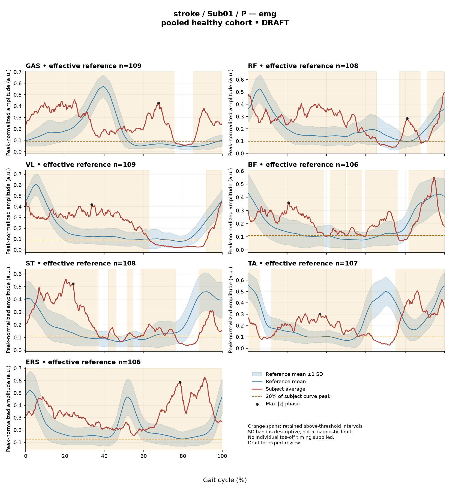

RE13389B15569126D
rater1 / 76 of 150 / Case stroke_Sub01_P / Review row 77
Report: verbatim text
Text file for exact quotations# Gait Report Interpretation — Sub01_P **Version:** limited-evidence-v3.1-candidate **Scope note:** This is a limited-evidence interpretation of a supplied quantitative summary. It is not a diagnosis, not a severity grading, and not a basis for treatment selection. --- ## 1. Objective Findings **Participant and side.** Sub01_P is a member of the stroke cohort. All findings below describe the **paretic** side. The released cycle is defined from initial contact of the paretic limb (0%) to the next initial contact of that same limb (100%); these endpoints are two successive occurrences of the same event, not a single instant. No intermediate gait event (including individual toe-off) is supplied, so all timing in this report is expressed strictly as a percentage of the analysis cycle and no percentage is assigned to a gait phase or sub-phase. **Spatiotemporal values as supplied:** | Measure | Value | |---|---| | Gait speed | 0.25 m/s | | Speed band label | "household ambulator (<0.4 m/s)" | | Cadence | 64.7 steps/min | | Step length symmetry index | −46.3% (successive-footfall definition) | | Composite kinematic deviation score (GPS-like) | 15.32 | The speed band label denotes a speed interval only. It does not report measured walking independence, safety, assistive-device use, or real-world community mobility, and none of those were supplied. The step length symmetry index of **−46.3%** is negative, which by the stated formula means the **paretic step is the shorter** of the two. This value was computed with the successive-footfall definition (each heel at its own initial contact); the alternative instantaneous definition can yield a different number for some subjects, so the magnitude is definition-dependent and should not be compared directly to symmetry values computed another way. **Reference-comparability limit (applies to everything in Sections 2 and 3).** The deviation reference used for this subject is 138 pooled healthy subjects (1001 phase points, main_cohort_excel), pooling both body sides and all ages; it is not matched to this participant. The healthy cohort's self-selected speeds span 0.80–1.79 m/s. At **0.25 m/s this subject falls well below that floor, so no speed-matched healthy reference exists in this dataset.** Every deviation reported below therefore conflates slow-walking effects with any stroke-related control changes, and these data cannot separate the two. Deviations are described as differences from an empirical reference; they do not by themselves establish a disease effect, a pathological mechanism, or a clinical diagnosis. **Channels supplied / not supplied.** Seven EMG channels (GAS, RF, VL, BF, ST, TA, ERS) and four sagittal kinematic channels (ankle, knee, hip, pelvis) are supplied. Coronal and transverse plane kinematics are not included in this dataset. Individual toe-off, matched muscle-specific normal timing bands, stride-to-stride variability, raw-signal quality checks, and expert plots are outside this input — they are *not supplied to this interpretation* and must not be described as absent from the source release. Age, sex, gait events, time post-stroke, stroke clinical scores and non-paretic-side data were not provided in this summary; some of these may exist in the release but cannot be used here. --- ## 2. EMG Envelope and Threshold Findings **What these numbers are.** The curves are ensemble-averaged envelopes. Normalization used a shared maximum across available strides per participant, side and muscle (the denominator is not shared between sides), with no further amplitude normalization in this pipeline. Amplitudes are therefore **relative envelope values** — not neural drive, force or strength — and muscles must not be ranked as stronger or weaker from them. An average curve cannot demonstrate stride-to-stride variability, and none of the patterns below can be assumed to recur in every individual stride. Intervals below are properties of the **averaged envelope** under one rule: envelope exceeds 20% of that same curve's own peak, with a minimum retained interval of 3% of the cycle. They are not physiological onsets, offsets, contraction durations, or evidence of inactivity outside the listed regions. An interval written X%–Y% with X > Y wraps the 100%→0% boundary. Coverage percentages are as reported. | Muscle | Retained interval(s) (% cycle) | Coverage | Boundary | Peak norm. amp. | Max abs. z (location) | |---|---|---|---|---|---| | GAS | 86–76 (wraps) | 90% | continuous across boundary | 0.46 | 10.7 above ref., at 68% | | RF | 77–88; 92–66 (wraps) | 86% | continuous across boundary | 0.50 | 4.3 above ref., at 81% | | VL | 92–63 (wraps) | 71% | continuous across boundary | 0.45 | 4.2 above ref., at 34% | | BF | 42–50; 50–58; 60–76; 82–39 (wraps) | 89% | continuous across boundary | 0.55 | 2.3 above ref., at 21% | | ST | 42–46; 51–55; 58–76; 88–37 (wraps) | 74% | continuous across boundary | 0.56 | 4.1 above ref., at 24% | | TA | 12–63; 75–6 (wraps) | 82% | continuous across boundary | 0.51 | 4.1 above ref., at 37% | | ERS | 0–100 | 100% | continuous across boundary | 0.63 | 7.7 above ref., at 78% | **Reading these rows.** - All seven averaged envelopes remain above their own 20% threshold across the cycle-defining initial-contact boundary, and reported coverage is high in every channel (71%–100%). This describes the shape of the mean envelope relative to its own peak; it is not a statement that any muscle contracted continuously, nor that timing is "prolonged," which cannot be judged without matched muscle-specific timing references. - **ERS** is reported as 0%–100% with 100% coverage. Under this rule that means no region of the mean envelope met the criteria for falling below threshold as a retained sub-threshold segment; the supplied summary does not itself establish that literally no sample fell below 20% of peak, and a rounded 100% cannot be unrounded here. - For the other six muscles, the gaps between listed intervals (e.g. BF at roughly 76%–82%, TA at roughly 63%–75%) are regions where no interval met the threshold-plus-duration criteria. "No retained interval" is not evidence of muscle inactivity. - **BF** and **ST** show several short retained intervals separated by narrow gaps in the mid-cycle range. This is a property of the averaged envelope crossing a fixed relative threshold, and short gaps near the 3%-duration rule are sensitive to that rule; they should not be read as discrete physiological bursts in individual strides. - Peak normalized amplitudes cluster between 0.45 and 0.63. Because each curve is scaled by a participant-, side- and muscle-specific maximum, these values are **not comparable between muscles as an indication of relative effort or output**. **Max |z| interpretation.** Max |z| is an extreme-value statistic — the largest standardized difference from the phase-specific pooled reference mean across all 1001 phase points — not a single-observation z-score. In this dataset every one of 109 healthy controls exceeds |z| = 2 on at least one muscle, and per-muscle healthy 95th percentiles for this statistic run 3.65 (ERS) to 4.61 (TA), higher under leave-one-out. The conventional 2-SD rule therefore does not apply. Against those per-muscle healthy percentiles: **BF (2.3)** and **TA (4.1)** sit below their respective healthy 95th-percentile values; **RF (4.3)**, **VL (4.2)** and **ST (4.1)** are of the same order as the quoted range of percentiles; **GAS (10.7)** and **ERS (7.7)** are substantially larger than any per-muscle 95th percentile quoted. "Above reference" means the curve lies above the reference **mean** at that phase point, not above a healthy percentile limit. The stated location (e.g. GAS at 68%) is where the largest standardized difference occurs — it is not necessarily where the envelope peaks and it does not identify a gait event or phase. Given the absence of any speed-matched reference, none of these values can be attributed to stroke pathology rather than to walking at 0.25 m/s. **Co-contraction indices.** CCI here is the Falconer–Winter index over the full continuous envelopes (2 × common area / summed areas) for the whole cycle. It can be non-zero even when detected intervals do not overlap, because sub-threshold envelope activity contributes. It is **not** simultaneous activation time, muscular force, stiffness, or a phase-specific result, and it depends on the normalization and envelope methods used here — values and thresholds from other studies or algorithms do not transfer. - **TA vs GAS = 0.67.** The healthy reference interval for this dataset is 0.24–0.59 (median 0.39). This value lies above the upper endpoint of that interval. - **RF vs BF = 0.72.** The healthy reference interval is 0.48–0.83 (median 0.68). This value lies inside the interval, slightly above the median. Lying inside the interval does not establish physiologically normal co-activation or normal muscle function; lying outside it does not establish pathological co-activation, impaired motor control, spasticity or any diagnosis. The same speed and matching limitation applies to both indices. **Dataset audit note.** The local array audit verified 614 evaluable muscle/subject combinations out of 700; 86 lacked valid nonzero paired samples. This is background on the release and is not a statement about this subject's channels, all seven of which returned values above. --- ## 3. Kinematic and Reference Comparisons All kinematic values are **sagittal plane only**; coronal and transverse motion are not part of this dataset and cannot be commented on. | Channel | Sagittal ROM | Gait Variable Score | |---|---|---| | Ankle | 11.6° | 16.27 | | Knee | 54.3° | 22.25 | | Hip | 46.8° | 11.32 | | Pelvis | 11.4° | 7.17 | | **Composite (GPS-like)** | — | **15.32** | The composite score is the RMS of the per-joint Gait Variable Scores over the sagittal channels supplied — a "GPS-like" value, not the validated 9-variable Gait Profile Score, so published GPS cut-offs do not apply. **Comparison with the supplied reference.** The composite score of 15.32 is above the supplied healthy composite reference median of 5.1 and above the 95th percentile of 10.7. These are pooled calibration percentiles from a reference not matched to this subject and not equivalent to matched leave-one-out normal limits. Among the individual channels, the knee GVS (22.25) is the largest contributor, followed by ankle (16.27), then hip (11.32) and pelvis (7.17); no per-joint healthy reference values were supplied, so these per-joint scores can be ranked against each other but not classified against a normal limit. **What GVS and the composite do and do not tell you.** Both are summary magnitudes of difference from the stated reference across the cycle. Neither localizes *when* in the cycle the difference occurs, nor in which direction (e.g. more flexed vs more extended), nor which part of the waveform drives it. A larger score indicates a larger average discrepancy from the pooled reference mean curve — nothing more. **ROM.** Ankle sagittal ROM of 11.6° and pelvic sagittal ROM of 11.4° are the smallest values in the set, and knee (54.3°) and hip (46.8°) are the largest. ROM alone, without an appropriate matched comparison (none is supplied for ROM here), does not establish a clinical restriction, contracture, or excessive motion. Because the subject's speed of 0.25 m/s lies far below the reference cohort's 0.80–1.79 m/s span, joint excursions and waveform shapes expected at very low speed cannot be distinguished from stroke-specific changes in these data. The kinematic deviations are accurately described as differences from this pooled empirical reference; they do not on their own establish a disease effect or support a diagnosis. --- ## 4. Questions for Further Clinical Assessment The following are open questions raised by the limits of this summary. None presupposes that the mechanism or measurement issue in question has been observed. 1. **Speed-matched comparison.** Is a slow-walking reference cohort (or a within-subject repeat at a different self-selected speed) available or obtainable, so that deviations from the pooled reference can be examined separately from speed effects? Without this, the composite of 15.32 and the large GAS and ERS max |z| values remain uninterpretable as to cause. 2. **Event timing.** Can individual toe-off and other gait events for this subject be retrieved from the release? Their absence is why no interval in Section 2 could be assigned to a gait phase or function, and why no timing could be called early, delayed or prolonged. 3. **Contralateral data.** Are non-paretic-side kinematics and EMG available? Note that EMG normalization denominators are side-specific in this release, so cross-side amplitude comparison would need explicit handling. 4. **Signal quality.** Has a raw-signal quality review (baseline noise, movement artifact, ECG or cross-talk contamination, electrode placement documentation) been performed for these channels? This was not supplied here, and it is one factor that could be examined when a mean envelope shows very high coverage — as ERS (100%), GAS (90%) and BF (89%) do — before any physiological reading is entertained. 5. **Stride-level data.** Are individual stride envelopes and stride-count information retrievable? The averaged curves used here cannot show consistency or variability across strides, which limits how far any of the described envelope patterns can be generalized to individual steps. 6. **Threshold sensitivity.** Would the fragmented BF and ST interval structure persist under a different relative threshold or minimum-duration rule? The short intervals and gaps reported are properties of the 20%-of-own-peak / 3%-of-cycle criteria. 7. **Step-length definition.** Would the −46.3% symmetry index change materially under the instantaneous definition? Confirming which definition is used in any comparison dataset is needed before this value is compared externally. 8. **Clinical and demographic context.** Are age, sex, time post-stroke, clinical scores, and observational gait or examination findings available in the release to place these summary numbers in context? None were supplied to this interpretation. **Overall.** This report describes averaged-envelope threshold findings, two whole-cycle co-contraction indices, and sagittal kinematic deviation magnitudes for the paretic side of one stroke-cohort participant, compared against a pooled, unmatched healthy reference with no speed overlap. The comparisons quantify differences from that reference only; they do not identify a mechanism, establish a disease effect, or support any clinical diagnosis, and no treatment recommendation is made or implied.
Coverage rows
| Excel row | ID | Required content | Components |
|---|---|---|---|
| 434 | R001 | Describe walking speed 0.25 m/s and that it is below the stated 0.80 m/s reference floor; no reference at this speed is supplied. | AND: displayed speed and that it lies below the 0.80 m/s reference floor, so no speed-supported healthy reference exists in this dataset. Optional: cadence, speed-band label (not a functional claim). One sentence may also serve the comparability half of G03. |
| 435 | R002 | Identify the knee as the principal sagittal GVS difference AND the ankle as another prominent difference. Exact GVS values are optional; identify the findings as reference-relative sagittal summary differences. | AND: knee AND ankle. Stating which joint is larger is optional; asserting the reverse order is an error. Exact GVS values are optional; no waveform direction, phase or restriction is required. Hip is optional. |
| 436 | R003 | Describe GAS envelope above its phase-specific reference mean at approximately 68% of the analysis cycle (displayed max |z| 10.7). Within each route, muscle identity AND mean-relative direction AND approximate cycle location are required. Exact max-|z| repetition is optional. | Required for each route: muscle identity AND direction relative to the phase-specific reference mean AND approximate cycle location. Optional: exact max |z| value, comparison with the supplied endpoint span (descriptive only). Prohibited: percentile classification, gait phase, physiological onset, severity. |
| 437 | R004 | Describe ERS envelope above its phase-specific reference mean at approximately 78% of the analysis cycle (displayed max |z| 7.7). Within each route, muscle identity AND mean-relative direction AND approximate cycle location are required. Exact max-|z| repetition is optional. | Required for each route: muscle identity AND direction relative to the phase-specific reference mean AND approximate cycle location. Optional: exact max |z| value, comparison with the supplied endpoint span (descriptive only). Prohibited: percentile classification, gait phase, physiological onset, severity. |
| 438 | R006 | Describe the supplied successive-footfall step-length index -46.3% and its meaning: the paretic step is shorter. | AND: displayed index and the direction supported by its sign. Optional: formula, definition wording. Acceptable phrasing for small displayed values: "a small difference with the paretic step slightly shorter/longer" (not a cutoff). Prohibited: restating the index as a percentage shortening (E01), severity grades, whole-gait symmetry generalization (E07 issue, not an omission). |
| 439 | G03 | Express a meaningful limitation of reference comparability AND why the comparison cannot establish disease effects or clinical diagnosis; for controls it cannot establish disease or overall normality. One statement may also support a case requirement. | AND: comparability and inference limitations |
Exact system input
Saved fileDraft a research gait-report interpretation for a physical therapist or physiatrist using only the supplied quantitative summary. This is a limited-evidence interpretation task, not diagnosis or treatment selection. Rules: - Describe the participant's actual group and side, available findings, and missing channels accurately. Healthy-group membership does not prove normal physiology; deviations from an empirical reference do not by themselves establish disease. - Treat detected EMG intervals and coverage as properties of an averaged envelope under the stated threshold and duration rule. Do not convert them into physiological onset, offset, duration, continuous contraction, or inactivity outside the intervals. You may describe reported coverage, retained intervals and boundary continuity at the mean-envelope level. Do not infer the same pattern in every individual stride. Say no below-threshold segment only when the supplied evidence establishes that; a rounded coverage value or no retained interval alone does not establish it. - Individual toe-off and matched muscle-specific timing references are not supplied in this task. Use percentages of the analysis cycle. When the input explicitly identifies an initial-contact boundary, you may name that boundary or describe numerical proximity to it. Do not assign stance/swing, loading response, pre-swing, mid-stance or another event to a percentage, or substitute a conventional 60% split. Anatomical muscle actions may be named, but do not map an interval to a gait-phase function such as clearance, push-off or weight acceptance. Do not characterize timing as normal, early, delayed or prolonged without the required evidence. - Respect the supplied normalization method. Relative envelope amplitude is not strength or force, and average curves do not establish stride-to-stride variability. - Report CCI as a whole-cycle overlap index of normalized EMG envelopes. You may compare it with the supplied empirical interval or a supplied median, including proximity to an endpoint. Do not invent an unavailable median. Being within that interval does not establish physiologically normal co-activation or normal muscle function; being outside it does not establish pathological co-activation, stiffness, impaired control or a diagnosis. CCI is not simultaneous activation time, muscular force or a phase-specific result. It depends on normalization and envelope methods; do not transfer values or thresholds from other studies or algorithms. - Describe GVS and GPS-like as summary differences from the stated reference. Neither localizes waveform direction or phase; ROM alone does not establish a clinical restriction without an appropriate comparison. Do not treat pooled calibration percentiles as matched leave-one-out normal limits. - Where using a reference comparison, convey both limited comparability and the inability to establish a disease effect or clinical diagnosis from that comparison. One clear explanation per report is enough; age and speed need not be recited as separate checklist words. A speed inside an overall range does not prove that an appropriate matched reference exists. Apply these limits to controls as well. - The location of maximum |z| is the largest standardized difference from the reference, not necessarily the time of peak envelope amplitude or a gait event. Above/below reference in an EMG row means relative to the phase-specific reference mean at that location, not relative to a healthy percentile limit. - Preserve numerical direction and the displayed precision. Do not invent values, clinical severity grades, statistical significance, or unavailable reference values. Descriptive comparisons with supplied values remain allowed. Near-boundary rounded values do not justify classifying hidden unrounded values. - Clinical follow-up questions may ask whether a mechanism or measurement issue exists; do not presuppose it has already been observed. Do not recommend treatment. If EMG is unavailable, section 2 may simply state that envelope timing, amplitude and CCI cannot be assessed. Reference-only plots do not provide patient EMG. Use exactly these four sections: 1. Objective Findings 2. EMG Envelope and Threshold Findings 3. Kinematic and Reference Comparisons 4. Questions for Further Clinical Assessment
Exact case input
Saved fileCandidate interpretation version: limited-evidence-v3.1-candidate
Draft the four-section report using only this subject's supplied evidence.
Metric definitions (read before interpreting any number below):
- All joint angles and ROM values are SAGITTAL PLANE only. Coronal/transverse data are not included.
- The released EMG curves are ensemble-averaged envelopes. For each participant and recorded muscle, normalization uses a shared maximum across the available strides before averaging; individual strides are not independently rescaled to their own peaks. This pipeline uses the released mean curves without further amplitude normalization. In the checked stroke release, the denominator is participant-, side-, and muscle-specific; it is not shared between sides. The local array audit verified 614 evaluable combinations, not all 700; 86 lacked valid nonzero paired samples. Amplitudes are relative envelope values, not absolute neural activation, force, or strength. Do not rank muscles as stronger or weaker from these amplitudes, or infer stride-to-stride variability from an average curve.
- Above-threshold intervals are the regions where the averaged envelope exceeds 20% of that curve's own peak, minimum retained interval 3% of the cycle (by sample count). An interval written as (X%-Y%) with X > Y wraps across the 100%->0% cycle boundary (envelope remains above threshold across the cycle-defining event). An onset of 0% is the analysis-window boundary, not necessarily a physiological onset. "No interval detected" means no region met the threshold + duration criteria; it does NOT mean the muscle is inactive or non-functional.
- CCI is the Falconer-Winter co-contraction index computed on the full continuous envelopes (2*common area / summed areas), so it can be non-zero even when the DETECTED burst intervals of the pair do not overlap (sub-threshold activity contributes).
- The composite kinematic deviation score is the RMS of the per-joint Gait Variable Scores over the sagittal channels provided ("GPS-like", not the validated 9-variable GPS).
- Step length symmetry index: 200*(paretic - non-paretic)/(paretic + non-paretic), in %. NEGATIVE means the paretic-side step is SHORTER. Two operational step-length definitions exist (successive-footfall: each heel's position at its own initial contact; instantaneous: both heels at the same instant) and give different values for some subjects -- the definition actually used is stated next to the symmetry value.
- "Max |z| deviation" is the LARGEST absolute z-score across all 1001 phase points of the cycle, comparing this curve to the healthy-cohort mean/SD at each phase. This is an extreme-value statistic, NOT a single-observation z-score: in this dataset every one of 109 healthy controls exceeds |z| = 2 on at least one muscle, and per-muscle healthy 95th percentiles for this statistic run 3.65 (ERS) to 4.61 (TA) -- higher still under leave-one-out. Do not label a value abnormal by the conventional 2-SD rule; use the healthy reference range given per muscle where provided.
- Healthy-cohort CCI reference (this dataset): RF-vs-BF median 0.68 (2.5th-97.5th pct 0.48-0.83); TA-vs-GAS median 0.39 (0.24-0.59). Composite score reference: median 5.1, 95th percentile 10.7.
- COHORT BACKGROUND (calibration context, not necessarily the exact reference used for this subject -- the actual reference composition is stated in a dedicated line with the subject data below): the full healthy cohort is 138 subjects for kinematics, effective n = 106-109 per muscle for EMG (29 controls have no usable EMG; completeness varies by age), pooling both body sides and all ages; it is not age- or speed-matched to this subject. A leave-one-out run uses one subject fewer than these counts.
- SPEED SUPPORT LIMIT (applies to most stroke subjects in this dataset): the healthy reference cohort's self-selected walking speeds span 0.80-1.79 m/s. If this subject's gait speed is below 0.80 m/s, NO speed-matched healthy reference exists in this dataset -- 41 of the 50 stroke subjects are below that floor. Deviations from the reference then conflate slow-walking effects with stroke-specific control changes, and the two cannot be separated from these data. Describe deviations from the reference as such; do not attribute them wholly to stroke pathology.
- Additional source fields are outside this input. Age, sex and gait events may be available in the release; time post-stroke, stroke clinical scores and a non-paretic-side designation apply only to the stroke cohort, as applicable. Do not claim every listed field exists for every participant. Distinguish not supplied, not applicable and documented absent recordings.
The released paretic-side cycle runs from initial contact of that limb at 0% to its next initial contact at 100%. The cycle boundary may be called initial contact; the endpoints are successive occurrences, not one instant. No intermediate event or phase boundary is supplied.
Model-visible information boundary: the summary contains mean-curve metrics and algorithm-detected intervals, not individual toe-off, matched normal muscle timing, stride-level variability, raw-signal quality checks, or expert plots. Information not supplied here must not be described as absent from the source dataset. Gait-cycle percentages alone do not identify gait phases.
Subject: Sub01_P (group: stroke, affected side: paretic)
Gait speed: 0.25 m/s (household ambulator (<0.4 m/s)) [The ambulation label denotes a speed band only, not measured walking independence, safety or real-world community mobility.]
Cadence: 64.7 steps/min
Step length symmetry index: -46.3% (step-length definition: successive_footfall)
Composite kinematic deviation score (GPS-like): 15.32
Deviation reference actually used for this subject: 138 healthy subjects (pooled), 1001 phase points, source: main_cohort_excel.
EMG envelope findings:
- GAS: above-threshold interval(s) 86%-76% (wraps cycle boundary), 90% of cycle above threshold, above threshold across cycle boundary, peak normalized amplitude 0.46, max |z| vs healthy reference: 10.7 (above reference, at 68% of cycle)
- RF: above-threshold interval(s) 77%-88%; 92%-66% (wraps cycle boundary), 86% of cycle above threshold, above threshold across cycle boundary, peak normalized amplitude 0.50, max |z| vs healthy reference: 4.3 (above reference, at 81% of cycle)
- VL: above-threshold interval(s) 92%-63% (wraps cycle boundary), 71% of cycle above threshold, above threshold across cycle boundary, peak normalized amplitude 0.45, max |z| vs healthy reference: 4.2 (above reference, at 34% of cycle)
- BF: above-threshold interval(s) 42%-50%; 50%-58%; 60%-76%; 82%-39% (wraps cycle boundary), 89% of cycle above threshold, above threshold across cycle boundary, peak normalized amplitude 0.55, max |z| vs healthy reference: 2.3 (above reference, at 21% of cycle)
- ST: above-threshold interval(s) 42%-46%; 51%-55%; 58%-76%; 88%-37% (wraps cycle boundary), 74% of cycle above threshold, above threshold across cycle boundary, peak normalized amplitude 0.56, max |z| vs healthy reference: 4.1 (above reference, at 24% of cycle)
- TA: above-threshold interval(s) 12%-63%; 75%-6% (wraps cycle boundary), 82% of cycle above threshold, above threshold across cycle boundary, peak normalized amplitude 0.51, max |z| vs healthy reference: 4.1 (above reference, at 37% of cycle)
- ERS: above-threshold interval(s) 0%-100%, 100% of cycle above threshold, above threshold across cycle boundary, peak normalized amplitude 0.63, max |z| vs healthy reference: 7.7 (above reference, at 78% of cycle)
Co-contraction indices:
- TA_vs_GAS: CCI = 0.67
- RF_vs_BF: CCI = 0.72
Joint kinematic findings (sagittal plane):
- AnkleAngles: range of motion 11.6 deg, Gait Variable Score 16.27
- KneeAngles: range of motion 54.3 deg, Gait Variable Score 22.25
- HipAngles: range of motion 46.8 deg, Gait Variable Score 11.32
- PelvisAngles: range of motion 11.4 deg, Gait Variable Score 7.17Reference card
Saved file# Reference context: stroke/Sub01_P Mean/SD reference: 138 controls; method pooled; exclusions: []. Effective reference counts: GAS=109, RF=108, VL=109, BF=106, ST=108, TA=107, ERS=106, AnkleAngles=138, KneeAngles=138, HipAngles=138, PelvisAngles=138. The exact system and user input files define what the model receives. The EMG and kinematic plots are supplementary expert evidence, not model inputs. The plotted mean plus/minus one SD is descriptive, not a clinical normal band. Negative lower EMG bands can result from mean minus SD; they do not imply negative recorded EMG. The max-|z| p95 span in the input is pooled calibration context. Complete muscle-specific LOO thresholds are not supplied; an appropriately indeterminate classification is allowed. Controls are excluded from their own mean/SD reference, but cohort-level calibration has prior reference-data reuse. It is not an independent matched clinical limit. GPS-like is a four-channel sagittal composite, not the validated nine-variable GPS. The pooled median/p95 background is not a matched LOO normality boundary. CCI uses continuous normalized envelopes over the whole analysis cycle. An empirical interval comparison does not establish normal muscle function. Threshold intervals and rounded coverage describe the averaged envelope. Rounded 100% coverage and one interval do not prove absence of short below-threshold gaps. Use the group-specific cycle and normalization provenance in the actual input. No individual intermediate gait events or matched normal muscle timing are supplied. Administrative age and published bilateral speed are not added to this input. Expert-visible plots do not justify requiring unseen direction, phase or morphology. For a new-case requirement, cite exact input evidence. Select clinically useful descriptive content without inferring a diagnosis or severity from rank alone.
Expert reference curves
Only text inputs were supplied to the model. Do not require curve-only findings.
EMG

Kinematics